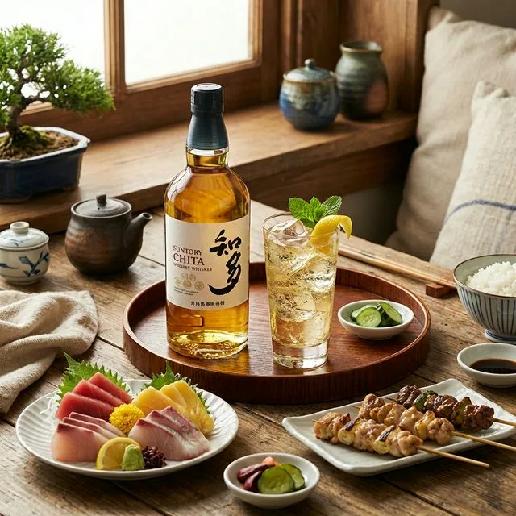

「知多」は和食の出汁（ダシ）だ。コンビニの焼き鳥と刺身が料亭 of 味に変わる魔法の1本
「今日の晩酌、何をつまみにしよう？」
そう迷ったとき、スーパーのお惣菜やコンビニの焼き鳥を選ぶなら、合わせるお酒はサントリーウイスキー「知多」一択です。
「ウイスキーは食後に飲むもの」という常識は捨ててください。
知多は、「和食の出汁（ダシ）」と同じ役割を果たします。
素材の味を邪魔せず、むしろ引き立てる。その驚きのペアリング体験をご紹介します。

知多が「和食」に合う科学的な理由
多くのウイスキーは「スモーキーさ」や「樽の香り」が強く、繊細な和食の味を消してしまいがちです。
しかし、知多はトウモロコシなどを原料とする「グレーンウイスキー」。
- クセのないクリアな味わい
- ほのかな甘み
- キレのある後味
これらが、醤油や味噌、出汁の旨味と喧嘩せずに調和します。
まるで「上質な白ワイン」や「高級な日本酒」のように、食事に寄り添うのです。
コンビニ＆スーパーで再現！最強の組み合わせ
1. 焼き鳥（タレ） × 知多ハイボール
コンビニのレジ横にある焼き鳥。あの甘辛いタレの味を、知多の「ほのかなバニラ香」が上品に包み込みます。
口の中の脂を炭酸が洗い流してくれるので、次の1本が止まらなくなります。
2. 白身魚の刺身 × 知多水割り
スーパーの半額シールが貼られた鯛やヒラメの刺身。
知多を少し濃いめの水割り（1:2）で合わせると、魚の甘みが引き立ちます。
大葉やミョウガなどの薬味とも相性抜群です。
3. 出汁巻き卵 × 知多ロック
出汁の優しい味わいと、知多の穀物の甘みがリンクします。
これはもう、「飲む出汁」です。
毎日の食卓を「料亭」に
高いお金を出して外食しなくても、知多が1本あれば、いつもの食卓が特別な空間に変わります。
「今日は和食だな」と思ったら、迷わず知多を手に取ってください。